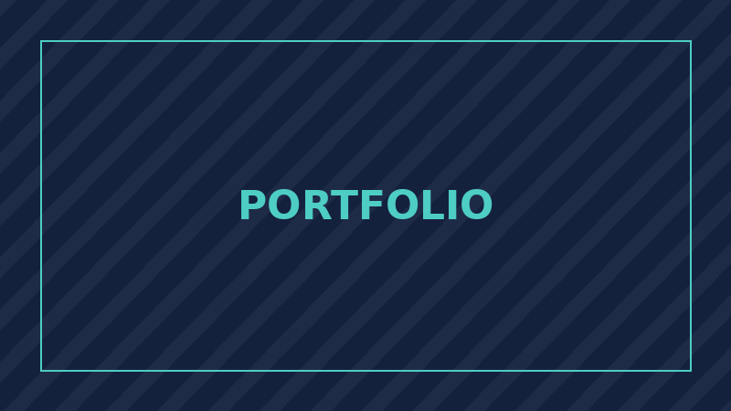
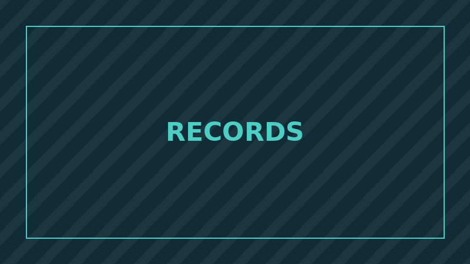
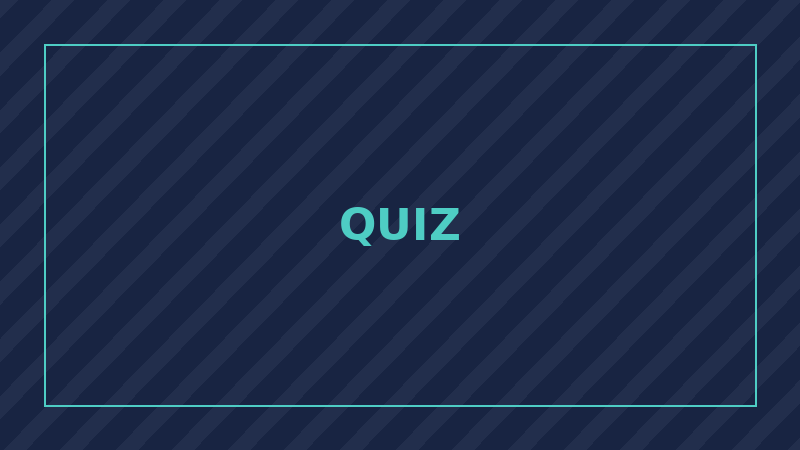
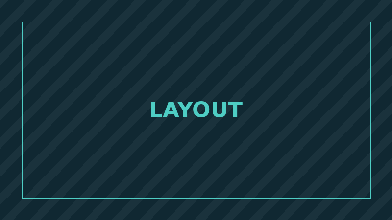
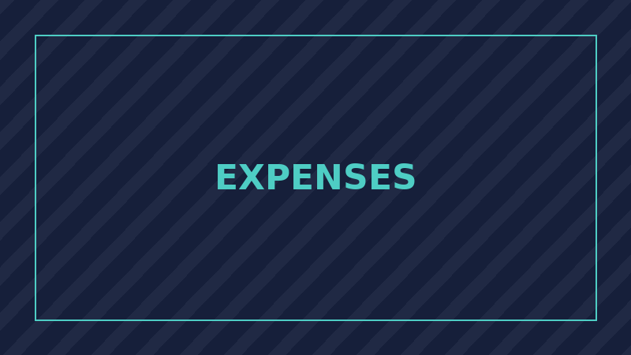
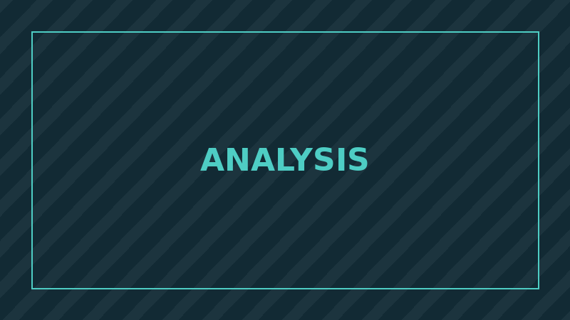

HTMLCSSJS
Personal Portfolio Website
This five-page responsive portfolio, built for the laboratory assessment with an external stylesheet, a shared script file and an organised folder structure.
Use the buttons below to filter the projects by category.
Showing 6 of 6 projects

This five-page responsive portfolio, built for the laboratory assessment with an external stylesheet, a shared script file and an organised folder structure.

A browser-based application that adds, edits, searches and deletes student records and keeps them in localStorage so the data survives a page refresh.

A timed multiple-choice quiz that reads questions from an array, scores the answers as they are selected and displays a result summary at the end.

A single-page layout exercise comparing CSS Grid and Flexbox, with a mobile-first stylesheet and three breakpoints.

A small budgeting tool that records income and expenses, calculates a running balance and summarises spending by category.

A coursework exercise that cleans a results dataset, computes averages and distributions, and presents the findings in a short written report.